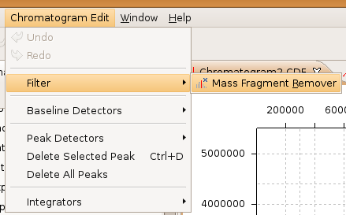

Chromatogram Edit Menu
The chromatogram edit menu shows the actions that can be applied on the chromatogram selection.
Dependent on the installed plugins, different actions can be performed.
Chromatogram modifications: Filter
Baseline detection: Baseline Detectors
Peak detection: Peak Detectors
Chromatogram, Baseline and Peak integration: Integrators
Chromatogram edit menu:
